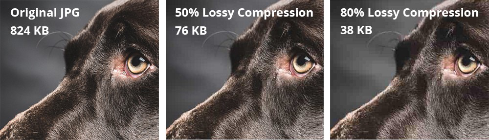
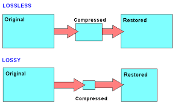

Alles wat hiervoor is behandeld heeft allemaal veel details. Dat is fijn omdat je dan bijna alles kan maken ermee. Het nadeel is wel dat het veel ruimte kost en dan raakt je geheugen van je computer sneller vol. Hier komt compressie bij kijken. Wat compressie doet is het verkleinen van een bestand waardoor het minder geheugen kost. Het wordt compressie komt van het engelse werkwoord to compress dat betekend samendrukken. Dat is precies wat er met een bestand na compressie is gebeurd het is samengedrukt. Ik ga de verschillen uitleggen tussen compressie bij afbeeldingen of video en bij geluid.
Compressie die bij afbeeldingen of video's vaak wordt gebruikt is lossy compression. Wat dat doet is de gegevens van het orginele bestand vervangen en verwijderen. Een voorbeeld hiervan is bij een foto van een hond, de foto heeft superveel verschillende kleuren ook kleuren die heel erg op elkaar lijken. Wat lossy compression doet is het verwijderen van kleuren die heel erg op elkaar lijken. Dan ga je bijvoorbeeld van 50 kleuren bruin naar 5. Dit zorgt ervoor dat de grootte van de afbeeldingen heel erg afneemt. Ik heb er een plaatje bij zodat je kan zien dat er nauwlijks verschil is te zien en dat de grootte heel erg afneemt.

Zoals je kan zien neemt de kwaliteit van de foto wel af maar is het verschil heel klein. De foto is wel van 824 KB naar 38 KB gegaan. Lossy compression is dus heel erg handig om geheugen te besparen en wordt dus ook veel gebruikt.
Je hebt ook nog lossless compression, zoals de naam al zegt worden hier geen gegevens verwijderd. Wat lossless compression doet is als een rij pixels dezelfde kleur heeft dan niet meer elk pixel apart een waarde geven maar de rij een waarde geven. Een voorbeeld hiervan is ipv (36,36,36,36,36,36) wordt het vervangen door (6,36). Hiermee wordt bedoelt dat een rij van 6 pixels de kleur 36 heeft. Een belangrijk verschil tussen lossless compression en lossy compression is dat bij losseless compression de orginele staat van de foto kan worden terug gehaald omdat de gegevens niet zijn verwijderd, hierdoor is het bestand na lossless compression groter dan bij lossy -. Bij lossy - is dit helaas niet mogelijk. Maar hoe weet je nou in de praktijk welke compressie er wordt gebruikt? Dat is heel simpel als je op whatsapp een foto naar iemand stuurt zie je dat de ontvanger een minder scherpe foto heeft gekregen. Welke compressie zou er dan worden gebruikt? Je raad het zeer waarschijnlijk goed het is natuurlijk lossy compression.
